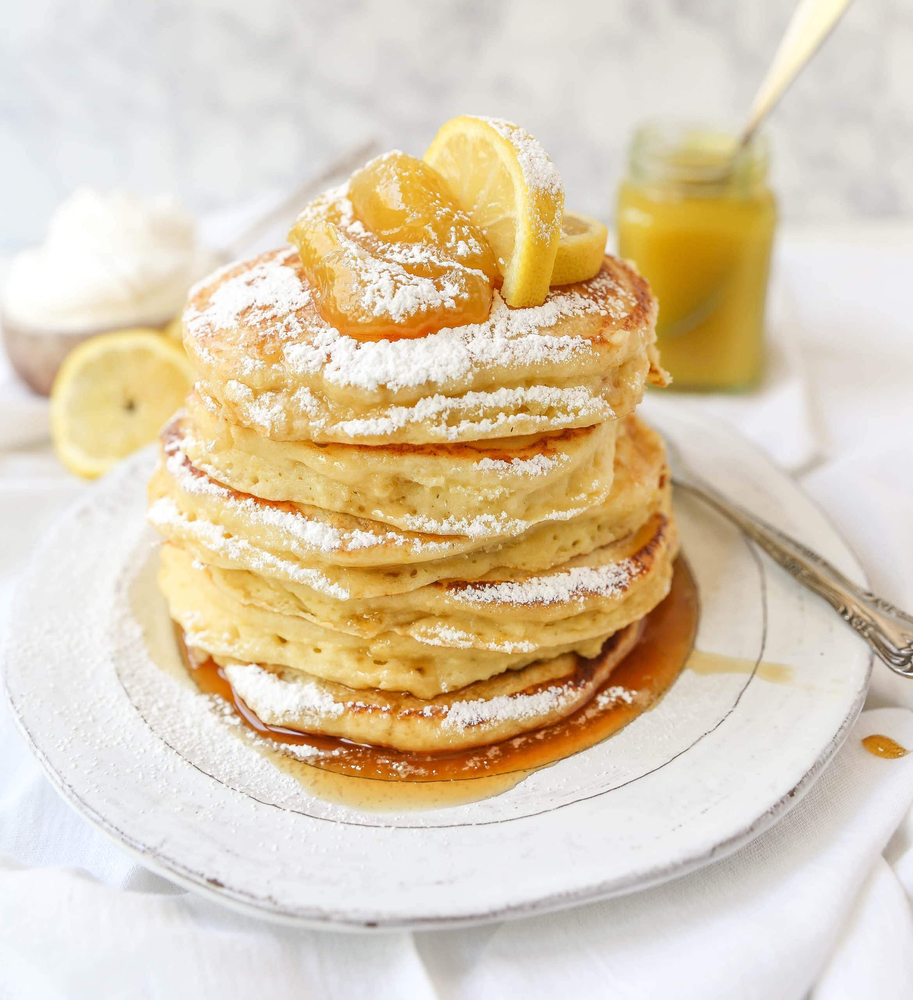

Lemon Ricotta Pancakes

These pancakes will delight your tastebuds!
The first time I made these easy cinnamon rolls, I made a mess and they still turned out!
They are gone in 2 days at my house. Simple to make and super yummy.
For all you lemon lovers out here this recipe will not disappoint. The pancakes are so light and
fluffy that they almost fly off of the plate.
Ingredients
- 3/4 cup cold water or milk
- 1/2 teaspoon baking soda
- 1/2 cup ricotta cheese
- 1 tablesppon of grated lemon zest
- 1 tablespoon vegetable oil
- 1 tablespoon white sugar
- 1 large egg
- 1/8 teaspoon vanilla extract
- 2 tablespoons melted butter
- 1 tablespoon lemon juice
- 1 cup self-rising flour
- 2 tablespoons self-rising flour
Steps
- Whisk water and baking soda together in a mixing bowl. Add ricotta cheese, lemon zest, vegetables oil,
sugar, egg, and vanilla. Whisk until smooth, breaking up lumps of cheese as you mix. Add melted butter,
lemon juice, and 1 cup plus 2 tablespoons self-rising flour. Whisk together, stirring until most of flour
disappears into the batter.
- Let batter sit at room temperature about 15 minutes.
- Heat lightly greased cast iron skillet or griddle over medium-high heat. Portion out 1/4 cup scoops of
batter onto skillet (cook in batches). When bubbles begin to form on the surface and the edges of the
pancakes start to look dry (2 to 3 minutes), flip and cook other side until cooked through, 2 to 3 minutes.
Transfer to a warm plate..